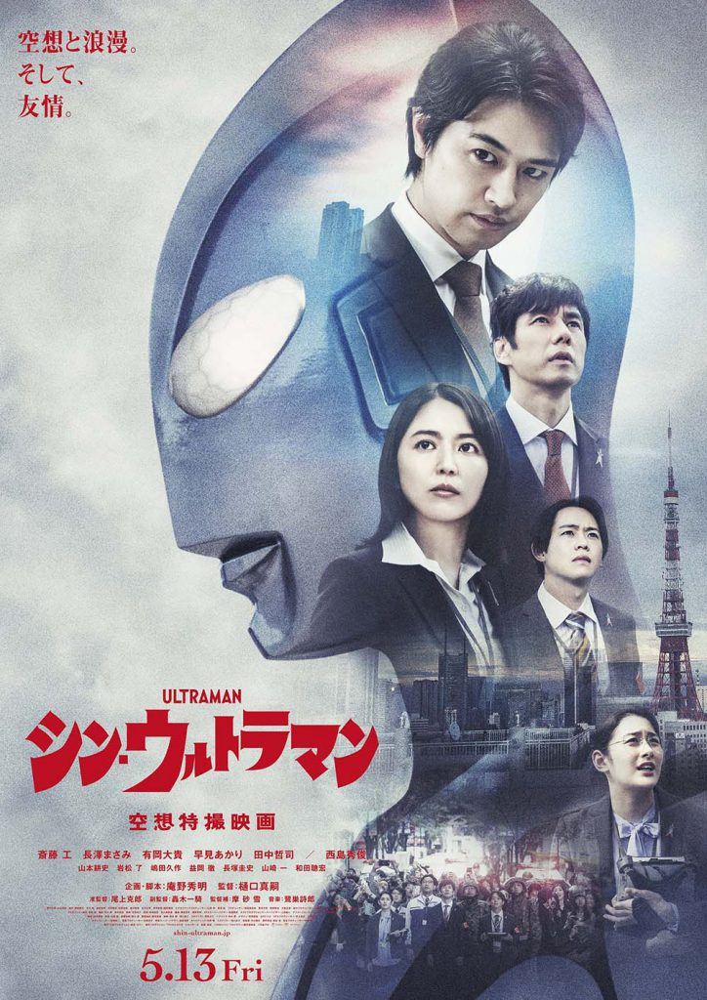
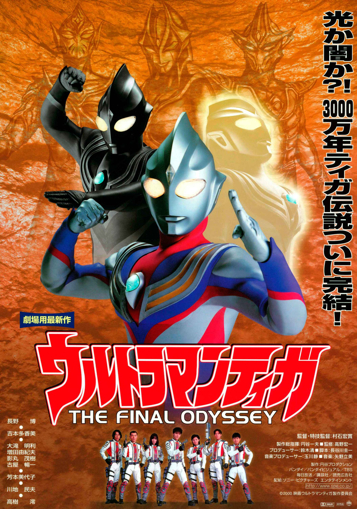
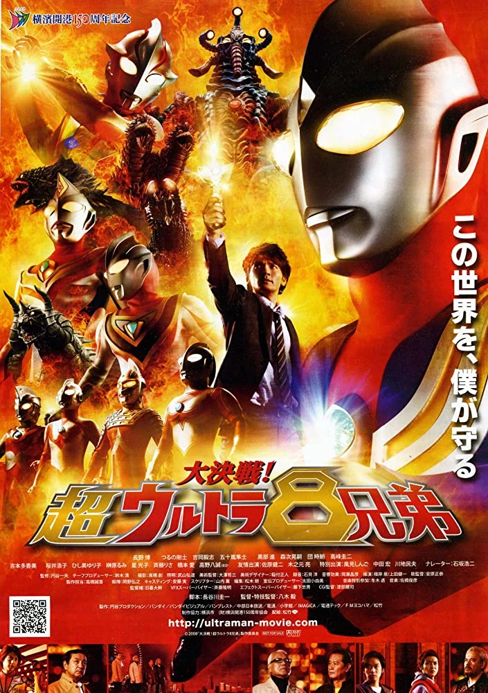
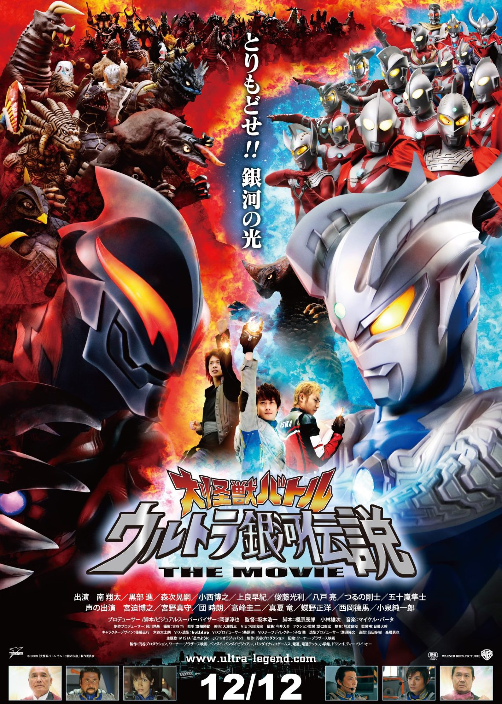
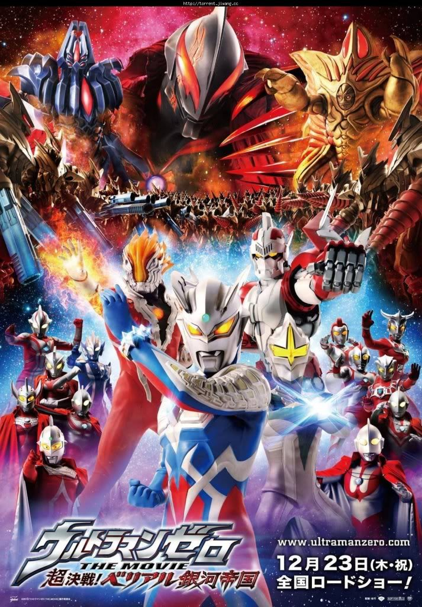
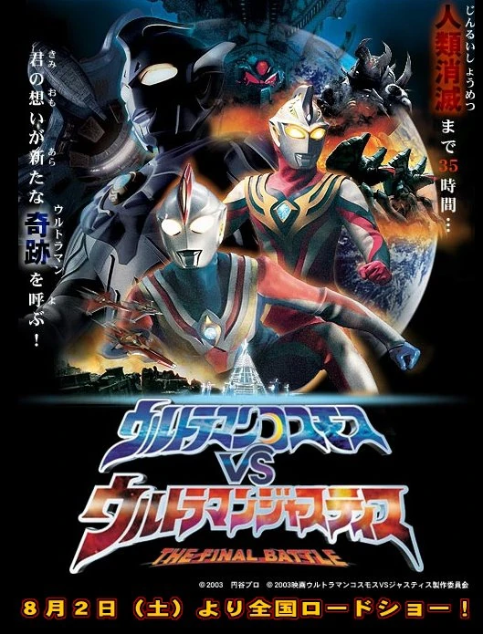
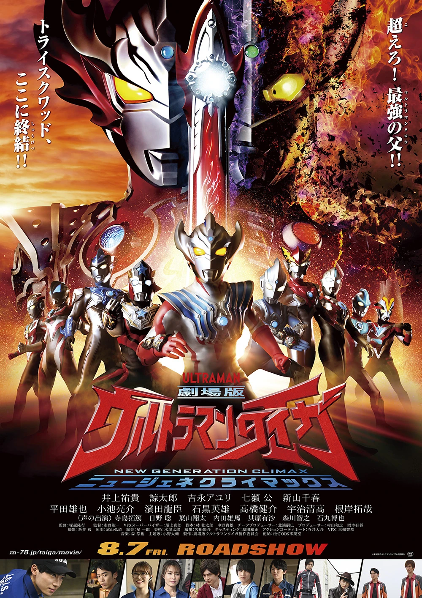
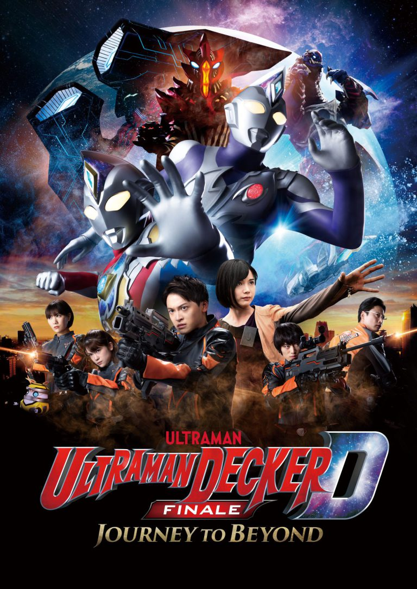

Jepang terus-menerus diserang oleh makhluk raksasa tak dikenal yang disebut "S-Class Species" (Kaiju). Pemerintah membentuk SSSP (S-Class Species Suppression Protocol) untuk menangani ancaman ini. Di tengah pertempuran sengit melawan monster Neronga, sesosok raksasa perak misterius jatuh dari langit dan menyelamatkan manusia. Namun, dalam kejadian itu, seorang analis SSSP bernama Shinji Kaminaga tewas secara tidak sengaja akibat benturan sang raksasa. Merasa bersalah, raksasa tersebut menyatukan jiwanya dengan Kaminaga untuk menebus kesalahannya sambil terus melindungi Bumi dari ancaman alien dan monster yang jauh lebih licik, termasuk konspirasi diplomatik antar galaksi yang mengancam eksistensi umat manusia.
SutradaraShinji Higuchi
Tahun Rilis2022
Durasi113 menit
GenreTokusatsu / Sci-Fi / Drama
Rating⭐ 8.2 / 10
Age Rating13+

Dua tahun setelah kekalahan Gatanothor, Daigo Madoka bersiap untuk menikahi Rena. Namun, kedamaian terusik saat tim ekspedisi TPC tanpa sengaja membuka segel di reruntuhan kota kuno Luluie, membangkitkan tiga raksasa kegelapan: Camearra, Darramb, dan Hudra. Terungkap fakta mengejutkan bahwa di masa lalu yang sangat jauh, Ultraman Tiga sebenarnya adalah pemimpin mereka yang paling jahat sebelum akhirnya memilih jalan cahaya. Camearra, yang merupakan mantan kekasih Tiga, mencoba menarik kembali Daigo ke sisi kegelapan. Daigo harus bertarung tidak hanya melawan fisik para monster, tapi juga pergolakan batin dan beban sejarah gelap yang ia warisi untuk melindungi masa depan manusia.
SutradaraHirochika Muraishi
Tahun Rilis2000
Durasi84 menit
GenreAction / Sc-Fi / Fantasy
Rating⭐ 7.5 / 10
Age Rating10+

Daigo Madoka hidup di dunia paralel di mana Ultraman hanyalah karakter fiksi di televisi. Di dunia ini, ia bersahabat dengan Asuka (Dyna) dan Gamu (Gaia), yang semuanya hidup sebagai warga sipil biasa yang melupakan mimpi masa kecil mereka. Namun, fenomena aneh terjadi saat monster-monster mulai muncul di pelabuhan Yokohama. Daigo mulai mendapatkan penglihatan tentang tujuh pahlawan cahaya lainnya. Saat kehancuran mulai melanda, Daigo menyadari bahwa hanya dengan "percaya" pada keajaiban, mereka bisa membangkitkan kekuatan pahlawan dalam diri mereka. Film ini menyatukan 4 pahlawan era Heisei dengan 4 pahlawan legendaris era Showa (Ultraman, Seven, Jack, Ace) dalam satu pertempuran pamungkas untuk menyelamatkan realitas.
SutradaraTakeshi Yagi
Tahun Rilis2008
Durasi98 menit
GenreSci-Fi / Tokusatsu / Crossover
Rating⭐ 7.2 / 10
Age Rating10+

Penjara Luar Angkasa yang dijaga ketat akhirnya jebol. Ultraman Belial, satu-satunya Ultra yang jatuh ke sisi gelap, berhasil kabur dengan bantuan Alien Zarab. Dengan membawa senjata Giga Battle Nizer, Belial menyerbu Planet Cahaya sendirian dan mengalahkan hampir seluruh populasi Ultra, termasuk para Ultra Brothers. Ia mencuri Plasma Spark, sumber energi utama yang membuat Planet Cahaya membeku seketika. Di sisi lain, seorang pemuda sombong bernama Zero sedang diasingkan dan dilatih oleh Ultraman Leo karena mencoba mencuri energi tersebut. Ketika alam semesta di ambang kehancuran, Zero harus membuktikan bahwa dirinya layak menjadi pahlawan dan menghentikan kegilaan Belial di pemakaman monster, Monster Graveyard.
SutradaraKoichi Sakamoto
Tahun Rilis2009
Durasi96 menit
GenreSci-Fi / Action / Space Opera
Rating⭐ 7.1 / 10
Age Rating10+

Setelah kekalahannya, ternyata esensi Belial selamat dan melarikan diri ke dimensi lain yang dikenal sebagai "Another Space". Di sana, ia membangun kekaisaran robot raksasa dan menyebut dirinya Kaiser Belial, bertujuan untuk menambang kristal energi Emerald demi menguasai seluruh multiverse. Ultraman Zero dikirim sendirian oleh penduduk Planet Cahaya ke dimensi tersebut untuk menyelidiki ancaman ini. Di sana, ia bertemu dengan manusia bernama Run dan adiknya, Nao, serta para pejuang galaksi lainnya seperti Glenfire, Mirror Knight, dan Jean-Bot. Tanpa bantuan dari rumahnya, Zero harus membentuk aliansi baru (Ultimate Force Zero) untuk menghentikan pasukan robot Belial yang jumlahnya jutaan.
SutradaraYuichi Abe
Tahun Rilis2010
Durasi100 menit
GenreSci-Fi / Adventure / Fantasy
Rating⭐ 7.0 / 10
Age Rating10+

Sebuah entitas kosmik yang sangat kuat bernama "Delusion" menganggap bahwa peradaban manusia di Bumi akan menjadi ancaman bagi kedamaian alam semesta di masa depan. Delusion mengirim Ultraman Justice ke Bumi untuk mengawasi proses pemusnahannya. Musashi (Cosmos) yang selalu percaya pada kasih sayang mencoba menghentikan Justice, namun Cosmos kalah telak dan menghilang. Ketika armada tempur raksasa Glandel mulai mendekati Bumi untuk melakukan "reset" total pada kehidupan, Justice mulai tersentuh oleh tekad manusia dan hewan peliharaan mereka yang tak mau menyerah. Justice akhirnya berbalik arah melawan tuannya sendiri demi melindungi Bumi, dan saat harapan hampir sirna, Cosmos kembali bangkit untuk bersatu dengan Justice menciptakan legenda baru.
SutradaraHirochika Muraishi
Tahun Rilis2003
Durasi75 menit
GenreTokusatsu / Sci-Fi / Drama
Rating⭐ 6.8 / 10
Age Rating10+

Hiroyuki Kudo, yang menjadi inang bagi tiga Ultraman (Taiga, Titas, Fuma), kini menjadi target utama oleh entitas jahat yang ingin menguasai Bumi. Situasi memburuk ketika ayah Taiga, sang legenda Ultraman Taro, tiba-tiba menyerang Bumi dalam kondisi yang tidak normal. Taro ternyata telah dikuasai oleh energi kegelapan dari Grimdo, monster kuno yang sangat kuat. Menghadapi krisis ini, seluruh pahlawan dari era New Generation (Ginga, Victory, X, Orb, Geed, Rosso, Blu, Grigio) berkumpul untuk membantu Taiga. Pertempuran keluarga antara ayah dan anak ini mencapai puncaknya ketika semua energi New Generation menyatu ke dalam tubuh Taiga untuk melahirkan wujud pahlawan terakhir yang sanggup menandingi kegelapan absolut.
SutradaraRyuichi Ichino
Tahun Rilis2020
Durasi71 menit
GenreTokusatsu / Sci-Fi / Action
Rating⭐ 6.5 / 10
Age Rating10+

Setelah ancaman Sphere berhasil dimusnahkan dan Kanata kehilangan kemampuannya untuk berubah menjadi Decker, tim GUTS-Select kembali fokus pada rekonstruksi Bumi. Namun, ketenangan itu hancur saat Alien Zorugiku menyerang dengan teknologi suara yang mampu melumpuhkan sistem pertahanan manusia. Di tengah keputusasaan tanpa adanya Ultraman, seorang wanita misterius bernama Dinas muncul dengan membawa alat transformasi yang serupa dengan milik Kanata. Ia adalah seorang pejuang dari planet luar yang membawa harapan baru. Kanata dan timnya harus menemukan cara untuk bertarung di sisi Ultraman Dinas, membuktikan bahwa keberanian manusia adalah kekuatan yang sesungguhnya, bukan sekadar kekuatan dari luar angkasa.
SutradaraMasayoshi Takesue
Tahun Rilis2023
Durasi75 menit
GenreSci-Fi / Action / Drama
Rating⭐ 6.7 / 10
Age Rating10+